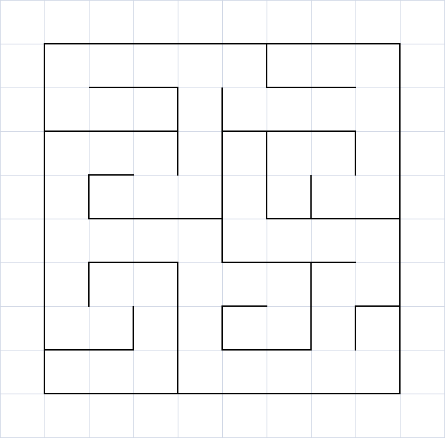

|
All-Terrain Maze Solving, Fall 2010 - Spring 2011
|
Rough terrain is a perennial issue in the world of robotics; how do you make an
autonomous vehicle track in a desired direction over terrain that is difficult or
impossible to traverse in exactly the desired direction? In addition, navigation
from one point to another can be a significant issue. This competition takes both
of these challenges and wraps them into one. The challenge involves a maze with
various rough terrain elements dispersed throughout its varied passageways. The
maze is closed and the starting and ending locations will be picked at random on
the competition date to prevent groups from simply hard-coding their robots to follow
one single path. Groups will need to develop an algorithm to nagivate through the
maze. The groups will also need to design their robot to mechanically handle the
terrain challenges and be able to make the robot drive through the maze itself.
All challenges must be completed autonomously. Please see the
competition rules for more details.
The competition maze will be:

|
|
|